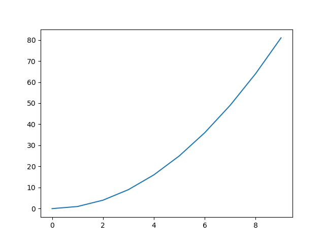
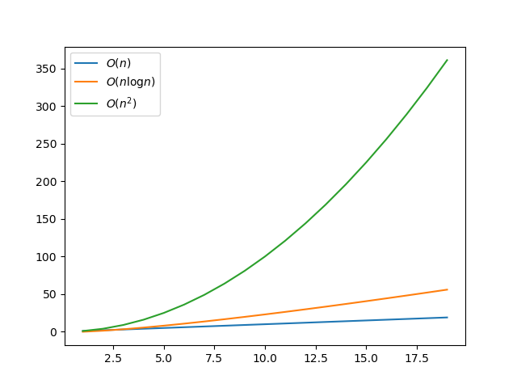

Diviser pour régner⚓︎

1. Retour sur l'algorithme de dichotomie⚓︎
Nous avons vu en classe de Première l'algorithme de dichotomie (du grec dikhotomia, « division en deux parties »).
Notre but ici est la recherche de la présence (ou non) d'un élément dans une liste triée.
Notre fonction renverra donc un booléen.
La recherche naïve (élément par élément) est naturellement de complexité linéaire. Nous allons voir que la méthode dichotomique est plus efficace.

1.1 Version impérative⚓︎
Dichotomie version impérative 
1 2 3 4 5 6 7 8 9 10 11 12 13 14 15 16 | |
- on prend l'indice central
- on prend la valeur centrale
- si la valeur centrale est la valeur cherchée...
- si la valeur centrale est trop petite...
- on ne prend pas la valeur centrale qui a déjà été testée
Exemple d'utilisation :
>>> tab = [1, 5, 7, 9, 12, 13]
>>> recherche_dichotomique(tab, 12)
True
>>> recherche_dichotomique(tab, 17)
False
À chaque tour de la boucle while, la taille de la liste est divisée par 2. Ceci confère à cet algorithme une complexité logarithmique (bien meilleure qu'une complexité linéaire).
1.2 Version récursive⚓︎
1.2.1 Préambule : le slicing⚓︎
Pour écrire simplement la version récursive de cet algorithme, nous allons avoir besoin de faire du slicing (découpage) de listes. Cette manipulation n'est pas au programme de NSI (même si elle est très simple). Attention, elle a un coût algorithmique important, qui peut fausser notre analyse de complexité.
Exemples de slicing :
>>> lst = ['a', 'b', 'c', 'd', 'e']
>>> lst[:2]
['a', 'b']
>>> lst[2:]
['c', 'd', 'e']
On comprend que :
lst[:k]va renvoyer la sous-liste composée du premier élément jusqu'à celui d'indiceknon inclus.lst[k:]va renvoyer la sous-liste composée duk-ième élément (inclus) jusqu'au dernier.- plus généralement,
lst[k:p]va renvoyer la sous-liste composée duk-ième élément (inclus) jusqu'aup-ième (non inclus).
1.2.2 Dichotomie récursive avec slicing⚓︎
Dichotomie version récursive avec slicing
1 2 3 4 5 6 7 8 9 10 | |
- On prend la partie droite de liste, juste après l'indice central.
- On prend la partie gauche de liste, juste avant l'indice central.
Exemple d'utilisation :
>>> tab = [1, 5, 7, 9, 12, 13]
>>> dichotomie_rec(tab, 12)
True
>>> dichotomie_rec(tab, 17)
False
Visualisation grâce à PythonTutor:
1.2.3 Dichotomie récursive sans slicing⚓︎
Il est possible de programmer de manière récursive la recherche dichotomique sans toucher à la liste, et donc en jouant uniquement sur les indices :
Dichotomie version récursive sans slicing
1 2 3 4 5 6 7 8 9 10 11 12 | |
- Pour pouvoir appeler simplement la fonction sans avoir à préciser les indices, on leur donne des paramètres par défaut.
- Il est impossible de donner
j=len(tab)-1par défaut (cartabest aussi un paramètre). On passe donc par une autre valeur (iciNone) qu'on va ici intercepter.
Exemple d'utilisation :
>>> tab = [1, 5, 7, 9, 12, 13]
>>> dicho_rec_2(tab, 12)
True
>>> dicho_rec_2(tab, 17)
False
2. Diviser pour régner⚓︎
Les algorithmes de dichotomie présentés ci-dessous ont tous en commun de diviser par deux la taille des données de travail à chaque étape. Cette méthode de résolution d'un problème est connue sous le nom de diviser pour régner, ou divide and conquer en anglais.
Une définition pourrait être :
Définition
Un problème peut se résoudre en employant le paradigme diviser pour régner lorsque :
- il est possible de décomposer ce problème en sous-problèmes indépendants.
- la taille de ces sous-problèmes est une fraction du problème initial
Remarques :
- Les sous-problèmes peuvent nécessiter d'être ensuite recombinés entre eux (voir plus loin le tri fusion).
-
Considérons de l'écriture récursive de la fonction
factorielleci-dessous :On ne peut pas parler ici de diviser pour régner car la taille des données à traiter est passée de n à n-1. C'est bien une diminution (qui fait que l'algorithme fonctionne) mais il n'y a pas de division de la taille des données.def factorielle(n): if n == 0: return 1 else: return n * factorielle(n-1)
C'est cette division (par 2 dans le cas de la dichotomie) qui donne son efficacité à ce paradigme. -
Le paradigme diviser pour régner va naturellement amener à rédiger des programmes récursifs.
3. L'exponentiation rapide⚓︎
On appelle exponentiation le fait de mettre en puissance un nombre. On va donc coder, de deux manières différentes, la puissance d'un nombre.
3.1 Algorithme classique⚓︎
Exponentiation classique
1 2 3 4 5 | |
3.2 Algorithme utilisant diviser pour régner⚓︎
Nous allons nous appuyer sur la remarque mathématique suivante :
Pour tout nombre \(a\),
-
si \(n\) est pair, \(a^n = (a^2)^{\frac{n}{2}}\)
-
si \(n\) est impair, \(a^n = a \times a^{n-1} = a \times (a^2)^{\frac{n-1}{2}}\)
Ainsi, dans le cas où \(n\) est pair, il suffit d'élever \(a\) au carré (une seule opération) pour que l'exposant diminue de moitié. On peut donc programmer la fonction puissance en utilisant le paradigme diviser pour régner :
Exponentiation rapide
1 2 3 4 5 6 7 | |
3.3 Comparaison de la vitesse d'exécution des deux algorithmes⚓︎

Exercice
Recréer le graphique ci-dessus, qui compare les temps d'exécution des deux fonctions puissance et puissance_mod.
Aide pour Matplotlib : le code ci-dessous
1 2 3 4 5 6 7 8 9 | |
donne le graphique suivant :

Correction
1 2 3 4 5 6 7 8 9 10 11 12 13 14 15 16 17 18 19 20 21 22 23 24 25 26 27 28 | |
4. Le tri-fusion⚓︎
En anglais le merge sort.
4.1 Preambule : l'interclassement⚓︎
Le mécanisme principal du tri fusion est la fusion de deux listes triées en une nouvelle liste elle aussi triée.
On appelera ce mécanisme l'interclassement.
Principe de l'interclassement
Pour interclasser deux listes lst1 et lst2.
- on part d'une liste vide
lst_totale - on y ajoute alternativement les éléments de
lst1etlst2. Il faut pour cela gérer séparément un indicei1pour la listelst1et un indicei2pour la listei2. - quand une liste est épuisée, on y ajoute la totalité restante de l'autre liste.
Exercice
Coder la fonction interclassement.
Correction
def interclassement(lst1, lst2):
i1 = 0
i2 = 0
lst_totale = []
while i1 != len(lst1) and i2 != len(lst2):
if lst1[i1] < lst2[i2]:
lst_totale.append(lst1[i1])
i1 += 1
else:
lst_totale.append(lst2[i2])
i2 += 1
return lst_totale + lst1[i1:] + lst2[i2:]
Remarque : cette fonction fait l'objet d'un exercice de la BNS
4.2 La fusion⚓︎
4.2.1 Principe⚓︎
L'idée du tri fusion est le découpage de la liste originale en une multitude de listes ne contenant qu'un seul élément. Ces listes élémentaires seront ensuite interclassées avec la fonction précédente.

Principe de l'algorithme du tri fusion :
- pour trier une liste, on interclasse les deux moitiés de cette liste, précédémment elles-mêmes triées par le tri fusion.
- si une liste à trier est réduite à un élément, elle est déjà triée.
4.2.2 Implémentation⚓︎
La grande force de ce tri va être qu'il se programme simplement de manière récursive, en appelant à chaque étape la même fonction mais avec une taille de liste divisée par deux, ce qui justifie son classement parmi les algorithmes utilisants «diviser pour régner».
Algorithme de tri fusion (merge sort)
4.2.3 Visualisation⚓︎
Une erreur classique avec les fonctions récursives est de considérer que les appels récursifs sont simultanés. Ceci est faux ! L'animation suivante montre la progression du tri :
Il est aussi conseillé d'observer l'évolution de l'algorithme grâce à PythonTutor :
4.3 Complexité⚓︎
La division par 2 de la taille de la liste pourrait nous amener à penser que le tri fusion est de complexité logarithmique, comme l'algorithme de dichotomie. Il n'en est rien.
En effet, l'instruction finale interclassement(tri_fusion(lst[:m]), tri_fusion(lst[m:])) lance deux appels à la fonction tri_fusion (avec certes des données d'entrée deux fois plus petites).
On peut montrer que :
Complexité du tri fusion
L'algorithme de tri fusion est en \(O(n \log n)\).
On dit qu'il est quasi-linéaire. (ou linéarithmique)
Une complexité quasi-linéaire (en \(O(n \log n)\)) se situe «entre» une complexité linéaire (en \(O(n)\)) et une complexité quadratique (en \(O(n^2)\)). Mais elle est plus proche de la complexité linéaire.

Une jolie animation permettant de comparer les tris :

Issue de ce site